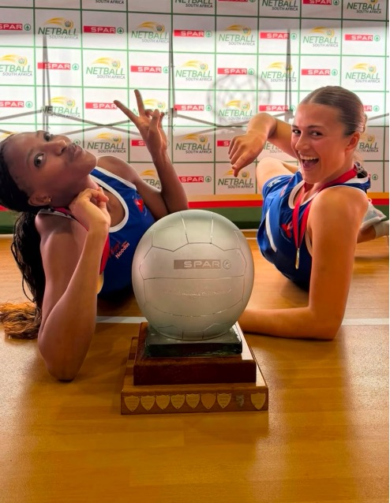

DSL Co-Director Dr Freda Kemp and Programme Lead Entle Futshane were part of a historic result at the 2026 SPAR National Netball Championships, hosted in Cape Town from 6 to 11 August. Dr Kemp was appointed head coach of the Cape Town Netball Federation (CTNF) Ladies Senior A team, and Entle played in the squad. Together, the team won gold, the first time CTNF has ever won the Ladies Senior A title.

Less than two weeks after the final whistle, Entle was back in the classroom, running Netball in a Box at Aitsa After Care Centre in Kylemore. That is what DSL is about: the same people who compete at the top level of the sport are the ones who take it into the communities that need it most. Read about the Aitsa visit on our Netball in a Box page.
For more information, contact:
Dr. Freda Kemp, Director
Email: fkemp64@gmail.com
Phone: 082 523 0785